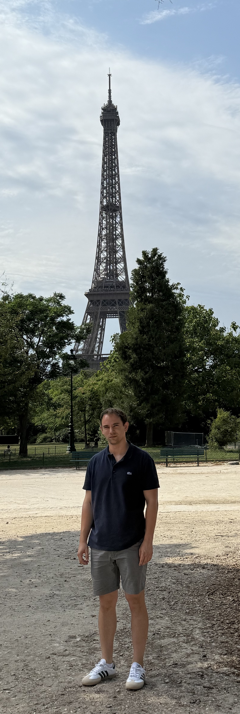

Reuben Drogin
Yale Department of Mathematics
Email: (first name).(last name)@yale.edu
About
I am a 5th year gradaute student advised by
Charles Smart. I am interested in probability and mathematical physics.
Research
- Drogin, Long Range Voter Models and Dynamical Fraction Brownian Motion
- Black, Drogin, Hernandez, Tail Bounds for the Dyson Series of Random Schrodinger Equations
- Black, Drogin, Hernandez, Self-Consistent Equations and Quantum Diffusion for the Anderson Model
- Drogin, Localization of One-Dimensional Random Band Matrices